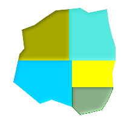

名前
ST_Subdivide — 指定した数より多い頂点を持たないジオメトリの集合を返します。
概要
setof geometry ST_Subdivide(geometry geom, integer max_vertices=256);
説明
ジオメトリをmax_verticesを超えないで表現できるまで分割します。ポリゴン内のポイントや他の包含関係等の演算では、通常、分割したデータセットのインデックスを使う方が早くなります。「当たらない」かどうかのテストは、分割されたポリゴンのボックス全体の面積は元のポリゴンのボックスより小さくなるので、より速くなります。「当たる」かどうかのテストは、再確認演算の実行箇所が減るので速くなります。同じ最小バウンディングボックスのクリッピング関数にはST_ClipByBox2Dがあります。max_verticesは5以上にしなければなりません。5ポイントは閉じたボックスの表現に必要なポイント数です。
GEOSモジュールで実現しています。
Availability: 2.2.0
Enhanced: 2.5.0 ポリゴン分割で存在するポイントを再利用して頂点数の最小値を8から5に変更。
例
-- 複雑なジオメトリの適切な分割
with complex_areas_to_subdivide as (
delete from polygons_table
where ST_NPoints(geom)
> 255
returning id, column1, column2, column3, geom
)
insert into polygons_table (fid, column1, column2, column3, geom)
select
fid, column1, column2, column3,
ST_Subdivide(geom, 255) as geom
from complex_areas_to_subdivide;
-- 元のジオメトリに結合するのに適切な、新しい分割されたテーブルの作成 CREATE TABLE subdivided_geoms AS SELECT pkey, ST_Subdivide(geom) AS geom FROM original_geoms;
 最大10頂点での分割
SELECT row_number() OVER() As rn, ST_AsText(geom) As wkt
FROM ( SELECT ST_SubDivide('POLYGON((132 10,119 23,85 35,68 29,66 28,49 42,32 56,22 64,32 110,40 119,36 150,
57 158,75 171,92 182,114 184,132 186,146 178,176 184,179 162,184 141,190 122,
190 100,185 79,186 56,186 52,178 34,168 18,147 13,132 10))'::geometry,10)) As f(geom);
rn │ wkt ────┼──────────────────────────────────────────────────────────────────────────────────────────────────────────────── 1 │ POLYGON((119 23,85 35,68 29,66 28,32 56,22 64,29.8260869565217 100,119 100,119 23)) 2 │ POLYGON((132 10,119 23,119 56,186 56,186 52,178 34,168 18,147 13,132 10)) 3 │ POLYGON((119 56,119 100,190 100,185 79,186 56,119 56)) 4 │ POLYGON((29.8260869565217 100,32 110,40 119,36 150,57 158,75 171,92 182,114 184,114 100,29.8260869565217 100)) 5 │ POLYGON((114 184,132 186,146 178,176 184,179 162,184 141,190 122,190 100,114 100,114 184))
|
 分割に使用できる追加の頂点を生成するには、ST_Segmentize(geography)との併用が便利です。
SELECT ST_AsText(ST_Subdivide(ST_Segmentize('LINESTRING(0 0, 85 85)'::geography,1200000)::geometry,8));
LINESTRING(0 0,0.487578359029357 5.57659056746196,0.984542144675897 11.1527721155093,1.50101059639722 16.7281035483571,1.94532113630331 21.25) LINESTRING(1.94532113630331 21.25,2.04869538062779 22.3020741387339,2.64204641967673 27.8740533545155,3.29994062412787 33.443216802941,4.04836719489742 39.0084282520239,4.59890468420694 42.5) LINESTRING(4.59890468420694 42.5,4.92498503922732 44.5680389206321,5.98737409390639 50.1195229244701,7.3290919767674 55.6587646879025,8.79638749938413 60.1969505994924) LINESTRING(8.79638749938413 60.1969505994924,9.11375579533779 61.1785363177625,11.6558166691368 66.6648504160202,15.642041247655 72.0867690601745,22.8716627200212 77.3609628116894,24.6991785131552 77.8939011989848) LINESTRING(24.6991785131552 77.8939011989848,39.4046096622744 82.1822848017636,44.7994523421035 82.5156766227011) LINESTRING(44.7994523421035 82.5156766227011,85 85)
|